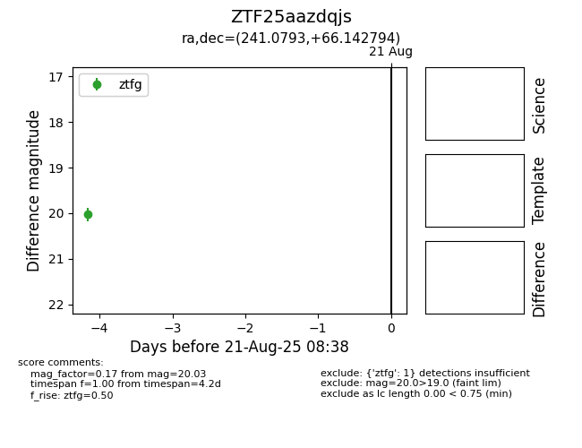

Target ZTF25aazdqjs at 2025-08-21 08:38, see:
FINK: fink-portal.org/ZTF25aazdqjs
Lasair: lasair-ztf.lsst.ac.uk/objects/ZTF25aazdqjs
ALeRCE: alerce.online/object/ZTF25aazdqjs
alt names
ZTF25aazdqjs (ztf,alerce)
coordinates:
equatorial (ra, dec) = (241.0793,+66.14279)
galactic (l, b) = (99.3536,+41.06064)
photometry
last ztfg=20.03
1 ztfg detections
